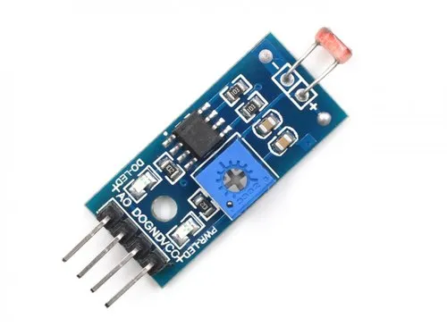

LDR(Light Dependent Resistor or photoresistor or photocell) is a sensor that will conduct current when light falls on it. When there is darkness, this sensor won't conduct and so its resistance would be very high at that time.
Specifications
Light Resistance: 50-100 K OhmsRated Power: 200 W
Diameter: 3-20 mm
Application: Photoresistor

| On Sensor | On Raspberry | On Arduino |
|---|---|---|
| Vcc | Power supply 3.5V to 5V (pin 1 or 2) | Power supply 3.5V to 5V |
| Data | Serial data (pin 7) | Analog pin (pin A2) |
| Ground(GND) | Ground (pin 6) | Ground (GND) |
It can be worked with
Working of LDR with Arduino Uno
int val = 0 ;
void setup()
{
Serial.begin(9600); // sensor buart rate
pinMode(3,INPUT); // LDR Sensor output pin connected
pinMode(4,OUTPUT); // LED PIN
}
void loop()
{
val = digitalRead(3); // LDR Sensor output pin connected
Serial.println(val); // see the value in serial mpnitor in Arduino IDE
delay(10);
if(val == 0 )
{
digitalWrite(4,HIGH); // LED ON
delay(1000);
}
else
{
digitalWrite(4,LOW); // LED OFF
}
}